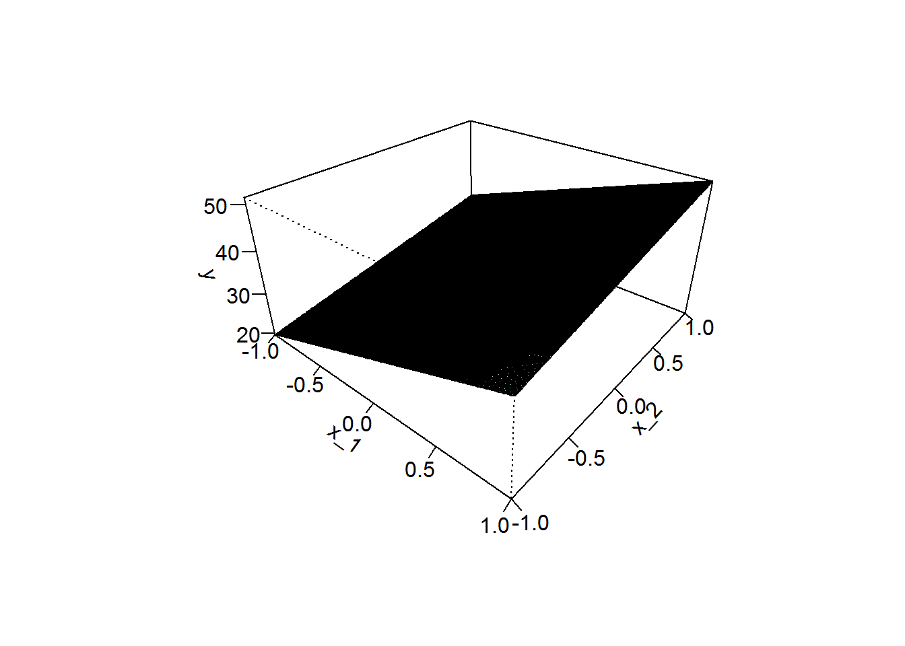
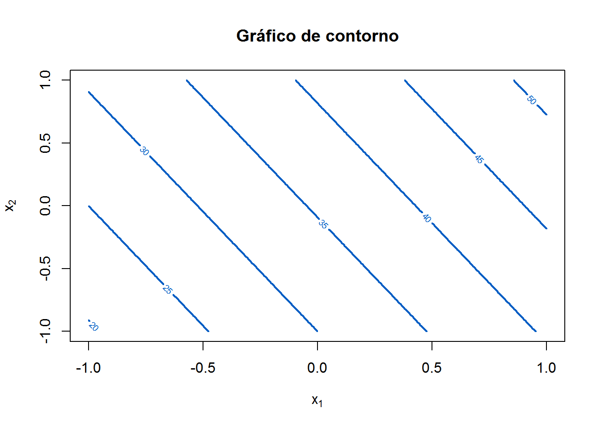
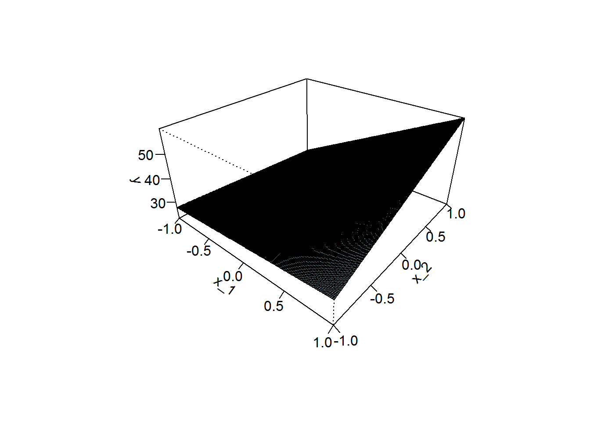
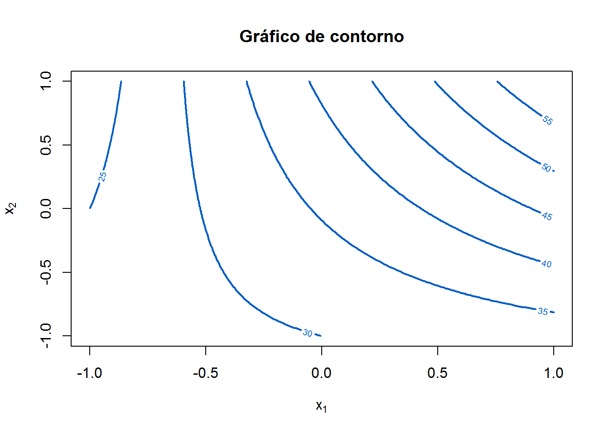

Capítulo 4 Análise de experimentos
Figura 4.1: Pig é Tech
Nesse capítulo vamos assumir que o delineamento, planejamento ou design do experimento foi adequado e que o experimento foi corretamente conduzido. Pretendemos aqui realizar a análise dos dados e fazer a interpretação dos testes estatísticos usados para avaliar os fatores que controlam um parâmetro ou um grupo de parâmetros. Esses múltiplos fatores de entrada podem ter sido manipulados para permitir avaliar seus efeitos na variável de saída ou resposta.
4.1 Príncipios e definições básicas
No livro de Lawson (2014) temos um dicionário de termos técnicos que permite um melhor acompanhamento da leitura.
- Experimento é uma ação em que o pesquisador altera pelo menos uma das variáveis em estudo e depois observa o efeito de suas ações através de medidas de uma característica do indivíduo (variável resposta). Exemplo: variável alterada - quantidade de mineral na ração; variável resposta - ganho e peso.
Observe que coleta de dados observacionais não é experimentação.
Unidade Experimental (ou parcela) é a unidade/indivíduo ao qual o tratamento será aplicado. Em geral, na suinocultura a unidade experimental é um suino.
Subamostra, subunidade ou unidade observacional. Quando a unidade experimental é dividida, após a ação ter sido tomada. Isso é chamado de subamostra ou subunidade. Por exemplo, se a unidade experimental fosse uma leitegada, poderia-se considerar, após o experimento realizado, medir o peso médio das leitegadas.
Às vezes, só é possível medir uma característica separadamente para cada subunidade; por esse motivo, são frequentemente chamadas de unidades observacionais. Medições em subamostras ou subunidades da mesma unidade experimental, são geralmente correlacionados e as estatísticas, como a média, devem ser calculadas antes da análise dos dados, ao invés de ser tratado como resultados independentes. Quando as subunidades podem ser consideradas independentes e existe interesse em determinar a variância nas subamostras, para não gerar nenhuma confusão no teste F para fatores de tratamento, o modelo misto deve ser usado em vez de simplesmente calcular a média das subamostras.
Variável Independente (Variável preditora, Tratamento ou Fator) pode ser uma das variáveis em estudo que está sendo controlada durante o experimento, como nível, quantidade, genética. Objetivo é verificar qual o efeito que uma mudança nessa variável causa na variável resposta.
Variável oculta (Background Variable ou Lurking Variable). Uma Variável independente também pode ser oculta, não controlada no experimento, mas que também pode ter efeito sobre a variável resposta. Ex: Temperatura. Em um experimento bem planejado o efeito dessa variável oculta deve estar acomodado nas demais variáveis não sendo determinante para a conclusão do estudo sobre as demais variáveis.
Variável dependente (ou resposta, geralmente denotada por \(y\)) é a característica daunidade experimental que é medida após cada realização do experimento. Em algumas situações podemos ter mais de uma variável resposta.
Efeito é a mudança na resposta causada pela mudança em um fator ou em uma variável independente/preditora. Após a realização do experimento, a análise dos dados pode chegar a conclusão de que o efeito é estatisticamente significativo, no entanto é importante que o pesquisador tenha capacidade de dizer se esse efeito tem importância prática. Isso é chamado de Efeito prático.
Repetições são duas ou mais realizações de um experimento com as mesmas configurações dos fatores ou variáveis independentes mas com diferentes unidades experimentais. As medidas da variável dependente podem variar entre repetições devido à mudanças nas variáveis ocultas e diferenças inerentes às unidades experimentais.
Medidas repetidas refere-se à medidas duplicadas da mesma unidade experimental para a mesma realização de um experimento. Por exemplo, se a variável resposta for o Peso, realiza-se a pesagem duas vezes para eleminar algum possível viés do equipamento. É necessário fazer a média das medições e não tratar como duas variáveis respostas.
Delineamento de Experimentos é uma coleção de experimentos ou execuções planejada antes da execução real. Nessa etapa são definidas a organização das unidades e a forma como estas receberão os tratamentos.
Fator Confundidor surgem quando uma alteração que um experimentador faz em um fator, entre as execuções, causa uma alteração em outro fator. Ou seja, esse fator tem influência sobre a variável resposta e também sobre uma variável preditora.
Fator de Vício resulta de uma ação do experimentador sobre uma variável independente no momento exato em que uma variável oculta (lurking variable) também muda. Dessa forma o efeito observado na variável resposta também pode ser devido a mudança na variável oculta, causando assim um viés.
Erro Experimental é a variação ``natural´´ existente entre observações de unidades experimentais que receberam o mesmo tratamento. Essa variação pode ser devida à questões inerentes ao indivíduo ou pela falta de uniformidade na condução física do experimento, muita vezes por variáveis que não podem ser contrladas. O fato de ser chamado “erro” não quer dizer que devemos abandonar tudo. É importante que o erro experimental seja reduzido ao máximo para que se tenha maior confiabilidade nos resultados ao utilizar técnicas estatísticas.
Com essas definições em mente, a diferença entre os estudos observacionais e os experimentos podem ser explicados com mais clareza. Em um estudo observacional, as variáveis (independentes e dependentes) são observadas sem qualquer tentativa de alterar ou controlar o valor dos fatores independentes. Portanto, quaisquer mudanças observadas na resposta, ou variável dependente, não podem necessariamente ser atribuídas à mudanças observadas nas variáveis independentes porque variáveis de fundo ou ocultas podem ser a causa. Em um experimento, no entanto, as variáveis independentes são propositalmente variadas e as execuções são conduzidas em uma maneira de equilibrar o efeito de quaisquer variáveis de fundo que mudam. Desta forma, a mudança média na resposta pode ser atribuída às mudanças feitas nas variáveis independentes.
4.2 Experimentos com delineamento inteiramente casualizados com um fator
Em um delineamento inteiramente casualizados com um fator, N unidades experimentais (suínos) são aleatóriamente divididas em K grupos. Cada grupo fica então sujeito a um dos níveis ou valores únicos do fator de tratamento. Se cada um dos K grupos possui r unidades experimentais, então harerá r réplicas de cada execução com o mesmo nível do fator de tratamento. Se N não for múltiplo de K, então será um número desigual de repetições de cada nível de fator.
Todos as demais variáveis independentes devem ser mantidas constantes para que não influenciem os efeitos desse fator. Este delineamento considera deve ser usado um fator em estudo e unidades experimentais homogêneas.
4.2.1 Granulometria ideal do grão de milho em ração para suínos
Em um estudo (hipotético) para determinar a granulometria ideal do grão de milho em ração para suínos, um lote homogêneo de n=12 leitões foi dividido em \(k=3\) grupos (avisa o pesquisador que o tamanho da amostra é muito pequeno). Cada grupo recebeu ração composta com milho de diferentes granulometria. Os diferentes tipos de granulometria foram obtidos triturando-se 1 Kg de milho em um triturador durante 5, 10 e 15 segundos. O peso dos leitões foi aferido antes do experimento e após 3 semanas. O ganho de peso é a variável resposta, o fator de tratamento é o tempo de trituração de 1 kg de milho e a unidade experimental é cada um dos 12 leitões envolvidos no experimento. Embora outros fatores possam afetar o desempenho dos animais, como os outros componentes da ração, eles são mantidos constantes para todos os animais ao longo do experimento.
4.2.2 Replicação e randomização
A replicação e a randomização foram popularizadas por Fisher. Estes são os primeiras técnicas que se enquadram na categoria de controle de erro. A técnica de replicação exige que r suínos sejam testados para cada tipo de granulagem, em vez de um único animal. Por haver replicação das unidades experimentais em cada nível do fator de tratamento, a variância do erro experimental pode ser calculado a partir dos dados, e esta variação será comparada aos efeitos do tratamento. Se a variabilidade entre os tratamentos não é maior do que a variância do erro experimental, as diferenças entre tratamentos são provavelmente devidas às diferenças das unidades experimentais atribuídas a cada tratamento. Sem replicação, é impossível dizer se a diferença entre tratamentos são reais ou apenas uma manifestação aleatória atribuídas às unidades experimentais.
A divisão aleatória de unidades experimentais em grupos é chamada de aleatorização, e é o procedimento pelo qual a validade do experimento é garantida contra vieses causados por outras variáveis ocultas. Na granulagem do milho, a randomização do experimento evita variáveis ocultas, como a variabilidade na capacidade de metabolização dos suínos e sexo, por exemplo.
Quando as unidades experimentais são randomizadas para os níveis do fator de tratamento, um teste de hipótese para testar a hipótese de que o efeito do tratamento é zero, pode ser realizado. Um teste para testar a significância dos parâmetros de um modelo linear, normalmente usado na análise de dados experimentais, é uma boa abordagem.
4.2.3 Exemplo de dados de delineamento inteiramente casualizados com um fator
Para dar sequência ao exemplo de granulometria ideal do grão de milho em ração para suínos vamos usar o R para construir um conjunto de dados aleatorizados com as caraterísticas descritas no exemplo. Nesse caso temos o fator tempo de moagem com 3 tempos de duração (níveis), (5, 10 e 15 segundos) e a ração é oferecida para 3 grupos de 4 suínos. Podemos exemplificar esse experimento usando o seguinte código do R.
set.seed(732)
n=12
ri=4
fatores=c("T5","T10","T15")
k=length(fatores)
temp=factor(rep(c("T5","T10","T15"),each=ri)) # níveis do fator tempo de trituração
ind = 1:n # Indivíduos de 1:12 (N=12)
fa=sample(temp, n ) # aleatorização dos níveis do fator tempo
indfa=c(which(fa=="T5"),which(fa=="T10"),which(fa=="T15"))
gp =NULL
gp[indfa]= c(rnorm(ri,40,1),rnorm(ri,40.3,1),rnorm(ri,42.7,1)) # ganho de peso
dados.g=data.frame(individuo=ind,fator=fa,Ganho.de.Peso=gp)
print(dados.g,row.names = FALSE) ## individuo fator Ganho.de.Peso
## 1 T15 40.97963
## 2 T10 41.27791
## 3 T15 44.52896
## 4 T5 41.82071
## 5 T10 40.93857
## 6 T10 41.39541
## 7 T5 39.42093
## 8 T15 42.75486
## 9 T15 43.16085
## 10 T5 39.81374
## 11 T10 39.85578
## 12 T5 39.63515Observando a variável resposta Ganho.de.Peso podemos ter uma média (geral), ou uma média para cada um dos níveis “T5”, “T10” e “T15”, as quais podemos chamar de \(m_5\), \(m_{10}\) e \(m_{15}\). Apergunta natural aqui é a comparação entre \(m_5\), \(m_{10}\) e \(m_{15}\). Se existir alguma diferença nessas médias, teremos um indício de que alguama granulagem é mais adequada/eficiente para o ganho de peso. Para que possamos testar essas possíveis diferenças é mais interessante colocar o problema em forma de um modelo matemático.
4.2.4 Modelo linear para delineamento completamente casualizados com um fator
O modelo matemático para os dados de um delineamento completamente casualizados (DCC) com um fator, ou delineamento completamente aleatório, com um número igual ou desigual de repetições para cada nível de fator pode ser escrito como:
\[\begin{equation} Y_{ij}=\mu_i+\varepsilon_{ij} \tag{4.1} \end{equation}\]
em que \(Y_{ij}\) é a resposta para a \(j\)-ésima unidade experimental sujeita à \(i\)-ésima nível do fator de tratamento, \(i = 1,\dots,k\), \(j = 1,\dots,r_i\), e \(r_i\) é o número de unidades experimentais ou replicações no nível \(i\) do fator de tratamento. Ou seja, é possível que se tenha uma média diferente para cada nível \(i\) do tratamento (observe que para o exemplo da granulometria, cada um dos 12 leitões está representado nesse modelo e \(\mu_1=m_5\), \(\mu_2=m_{10}\) e \(\mu_3=m_{15}\)). A distribuição dos erros experimentais, \(ij\), são mutuamente independentes devido à randomização e assumidas tendo distribuição normal. Assim, o problema da granulometria pode ser representado graficamente como na Figura 4.2.
Figura 4.2: Distribuição dos tratamentos com diferentes médias no exemplo da granulometria
Uma maneira alternativa de escrever o modelo (4.1) é
\[\begin{equation} Y_{ij}=\mu+\tau_i+\varepsilon_{ij}. \tag{4.2} \end{equation}\]
Isso é chamado de modelo de efeitos e \(\tau_i\)’s os são chamados de efeitos. O parâmetro \(\tau_i\) representa a diferença entre a média de longo prazo de todos os experimentos possíveis no \(i\)-ésimo nível do fator de tratamento e a média geral. Com a suposição de normalidade, \(Y_{ij}\sim N (\mu+\tau_i; \sigma^2)\) ou \(\varepsilon_{ij} \sim N(0; \sigma^2)\). A média no \(i\)-ésimo nível do fator de tratamento é representado por
\[\begin{equation} \overline{y}_{i.}=\frac{1}{r_{i}} \sum_{j=1}^{r_{i}} y_{i j} \tag{4.3} \end{equation}\] em que o \(r_i\) é o número de animais no i-ésimo grupo, ou seja, \(n=\sum r_i\), e a grande média (média de todas as observações) é dada por
\[\begin{equation} \overline{y}_{..}=\frac{1}{k} \sum_{i=1}^{k} \overline{y}_{i.}=\frac{1}{n} \sum_{i=1}^{k} \sum_{j=1}^{r_{i}} y_{i j} \tag{4.4} \end{equation}\]
4.2.5 Estimação
Usando o método de máxima verossimilhança, que é equivalente ao método dos mínimos quadrados ordinários (MQO) com essas suposições, as estimativas das médias das células são obtidas minimizando a soma dos quadrados dos erros (\(SQE\))
\[\begin{equation} SQE=\sum_{i=1}^{k} \sum_{j=1}^{r_{i}}\left(y_{i j}-\mu_{i}\right)^{2}. \tag{4.5} \end{equation}\]
Isso é feito tomando derivados parciais de \(SQE\) em relação a cada média da célula, igualando a zero e resolvendo cada equação teremos
\[\frac{\partial SQE}{\partial \mu_{i}}=-2 \sum_{i=1}^{k} \sum_{j=1}^{r_{i}}\left(y_{i j}-\mu_{i}\right)=0\]
Como resultados dessa operação obtemos, para a equação (4.1), o estimador
\[\hat{\mu}_{i}=\overline{y}_{i \cdot}\]
e para a equação (4.2)
\[\widehat{\mu + \tau_{i}}=\overline{y}_{i \cdot}\]
4.2.6 Representção matricial
No exemplo da granulometria, \(i=1,2,3\) e a equação (4.2) pode ser escrita como
\[\begin{align*} Y_{1j}&=\mu+\tau_1+\varepsilon_{1j}\\ Y_{2j}&=\mu+\tau_2+\varepsilon_{2j}\\ Y_{3j}&=\mu+\tau_3+\varepsilon_{3j}\\ \end{align*}\]
em que \(j = 1,\dots,4,\) nesse caso. Podemos escrever esse mesmo modelo de forma concisa usando a notação matricial como:
\[\begin{equation} {\bf y}={\bf X }\boldsymbol{\beta}+\boldsymbol{\varepsilon}, \tag{4.6} \end{equation}\] em que
\[{\bf y}=\left(\begin{array}{l} y_{11} \\ y_{12} \\ y_{13} \\ y_{14} \\ y_{21} \\ y_{22} \\ y_{23} \\ y_{24} \\ y_{31} \\ y_{32} \\ y_{33} \\ y_{34} \end{array}\right),\quad {\bf X}=\left(\begin{array}{cccc} 1 & 1 & 0 & 0 \\ 1 & 1 & 0 & 0 \\ 1 & 1 & 0 & 0 \\ 1 & 1 & 0 & 0 \\ 1 & 0 & 1 & 0 \\ 1 & 0 & 1 & 0 \\ 1 & 0 & 1 & 0 \\ 1 & 0 & 1 & 0 \\ 1 & 0 & 0 & 1 \\ 1 & 0 & 0 & 1 \\ 1 & 0 & 0 & 1 \\ 1 & 0 & 0 & 1 \end{array}\right), \quad\boldsymbol{\beta}=\left(\begin{array}{l} \mu \\ \tau_{1} \\ \tau_{2} \\ \tau_{3} \end{array}\right), \quad\boldsymbol{\varepsilon}=\left(\begin{array}{c} \epsilon_{11} \\ \epsilon_{12} \\ \epsilon_{13} \\ \epsilon_{14} \\ \epsilon_{21} \\ \epsilon_{22} \\ \epsilon_{23} \\ \epsilon_{24} \\ \epsilon_{31} \\ \epsilon_{32} \\ \epsilon_{33} \\ \epsilon_{34} \end{array}\right) \] em que \(\boldsymbol{\varepsilon} \sim MVN({\bf 0}, \sigma^2{\bf I}).\)
O problema de minimizar a equação (4.5) é equivalente à resolver a equação \({\bf X'X}\boldsymbol{\beta}={\bf X'y}\) no contexto matricial. Nesse caso é necessário que \({\bf X'X}\) seja invertível e para que isso aconteça é necessário que as colunas de \({\bf X }\) sejam linearmente independentes. Ao usarmos \({\bf X }\) com 4 colunas como definida acima, termos que a coluna 1 é combinação linear das outras 3, e isso implicará na não invertibilidade de \({\bf X'X}\). Por isso é necessário reescrever \({\bf X }\) com apenas 3 colunas, removendo aquela correspondente ao primeiro nível do fator (tempo igual à 5 segundos). Dessa forma,
\[{\bf X}=\left(\begin{array}{lll} 1 & 0 & 0 \\ 1 & 0 & 0 \\ 1 & 0 & 0 \\ 1 & 0 & 0 \\ 1 & 1 & 0 \\ 1 & 1 & 0 \\ 1 & 1 & 0 \\ 1 & 1 & 0 \\ 1 & 0 & 1 \\ 1 & 0 & 1 \\ 1 & 0 & 1 \\ 1 & 0 & 1 \end{array}\right) \]
Esta codificação de tratamento torna padrão o primeiro nível do fator, e todos os outros níveis do fator são comparados a ele. Para o exemplo com \(K = 3\) níveis de fator, a solução para via método de mínimos quadrados (MQO) de \({\bf X'X\beta=X'y}\) é
\[\begin{equation} \hat{\boldsymbol{\beta}}=\left(\boldsymbol{X}^{\prime} \boldsymbol{X}\right)^{-1} \boldsymbol{X}^{\prime} \boldsymbol{y}, \tag{4.7} \end{equation}\]
o que resulta em \[ \hat{\boldsymbol{\beta}}=\left(\begin{array}{c} \hat{\mu}+\hat{\tau}_{1} \\ \hat{\tau}_{2}-\hat{\tau}_{1} \\ \hat{\tau}_{3}-\hat{\tau}_{1} \end{array}\right), \] ou seja, nessa fomulação é retornado a diferença do tratamento 2 para o tratamento 1 (\(\hat{\tau}_{2}-\hat{\tau}_{1}\)) e a diferença do tratamento 3 para o tratamento 1 (\(\hat{\tau}_{3}-\hat{\tau}_{1}\)). Em termos de testes de hipóteses, para que exista diferença entre os tratamentos, basta que \(\hat{\tau}_{2}-\hat{\tau}_{1}\) ou \(\hat{\tau}_{3}-\hat{\tau}_{1}\) seja significativamente diferente de zero.
4.2.7 Mínimos quadrados matricial com o R
Vamos usar o R para resolver essas diferentes equações através de MQO e entender os resultados.
y=dados.g$Ganho.de.Peso # variável resposta/dependente
z10=rep(0,n)
z10[which(dados.g$fator=="T10")]=1
z15=rep(0,n)
z15[which(dados.g$fator=="T15")]=1
X=matrix(c(rep(1,n),z10,z15),nrow=n,ncol=3)
#X=model.matrix(~dados.g$fator) # criando a matrix X do modelo matricial
colnames(X)=c("Intercepto","Fator.10","Fator.15")
X## Intercepto Fator.10 Fator.15
## [1,] 1 0 1
## [2,] 1 1 0
## [3,] 1 0 1
## [4,] 1 0 0
## [5,] 1 1 0
## [6,] 1 1 0
## [7,] 1 0 0
## [8,] 1 0 1
## [9,] 1 0 1
## [10,] 1 0 0
## [11,] 1 1 0
## [12,] 1 0 0## [,1]
## Intercepto 40.1726305
## Fator.10 0.6942883
## Fator.15 2.6834468Assim temos que a diferença nas médias de ganho de peso para os animais que foram tratados com granulagem “10” para os que foram tratados com granulagem “5” é \(\hat{\tau}_{2}-\hat{\tau}_{1} = 0.6942883\) e a diferença nas médias de ganho de peso para os animais que foram tratados com granulagem “15” para os que foram tratados com granulagem “5” é \(\hat{\tau}_{3}-\hat{\tau}_{1}=2.6834468\).
4.2.8 Função lm()
Podemos obter o mesmo resultado usando a função lm() do R. Aqui vamos usar um recurso do R que permite “anexar” um conjunto de dados ou objeto do tipo list ou data.frame utilizando a função attach(). Ao anexar esse objeto os componentes se tornem imediatamente disponíveis e portanto podemos, por exemplo, digitar somente fator ao invés de dados.g$fator.
attach(dados.g) # anexando os dados
# relevel(fator, ref = "T5") fixa o nível T5 da variável fator como referência
modelo1=lm(Ganho.de.Peso ~ relevel(fator, ref = "T5"))
coeficientes=coef(modelo1)
names(coeficientes)=c("Intercepto","Fator.10","Fator.15")
coeficientes## Intercepto Fator.10 Fator.15
## 40.1726305 0.6942883 2.6834468Observe que o resultado é exatamente o mesmo, quando usamos o modelo matricial.
4.2.9 Estimação da variância \(\sigma^2\)
A estimativa da variância do erro experimental, \(\sigma^2\), é
\[\begin{equation} \widehat{\sigma^2}=\frac{SQE}{n-k}. \tag{4.8} \end{equation}\]
Assim, só é possível estimar essa variância quando há replicações em cada nível do fator de tratamento (\(n-k>0\)). Quando as medições em sub-amostras ou medidas repetidas da mesma unidade experimental são tratadas como replicações, esta estimativa pode ser seriamente enviesada. Na forma matricial podemos calcular o \(SQE\) da seguinte forma
\[\begin{equation} SQE=\boldsymbol{y}^{\prime} \boldsymbol{y}-\hat{\boldsymbol{\beta}}^{\prime} \boldsymbol{X}^{\prime} \boldsymbol{y}=\boldsymbol{y}^{\prime}\left(\boldsymbol{I}-\boldsymbol{X}\left(\boldsymbol{X}^{\prime} \boldsymbol{X}\right)^{-1} \boldsymbol{X}^{\prime}\right) \boldsymbol{y} \tag{4.9} \end{equation}\]
e pode-se demonstrar que a razão da soma do quadrado dos erros pela variância do erro experimental, \(SQE/\sigma^2\), segue uma distribuição qui-quadrado com \(n-k\) graus de liberdade, ou seja,
\[\begin{equation} \frac{SQE}{ \sigma^{2}} \sim \chi_{n-k}^{2}. \tag{4.10} \end{equation}\]
Para o exemplo da granulometria podemos obter, \(SQE\) de duas formas. Calculando diretamente usando a formulação matricial
I=diag(length(y)) #Matriz diagonal 12x12
SQE= t(y)%*%(I-X%*%solve(t(X)%*%X)%*%t(X))%*%y # SQE matricial
print(SQE)## [,1]
## [1,] 11.59738ou, a partir do modelo ajustado através da função lm() e gaurdado na variável modelo1
## [1] 11.597384.2.10 Teste de hipótese para efeito dos tratamentos
No modelo com DCC como representado na equação (4.1) as hipóteses estatísticas de interesse são \(H_0: \mu_1=\mu_2=\dots=\mu_k\) versus a hipótese altenrativa \(H_1\) de que pelo menos uma das médias é diferente das demais. No modelo com DCC como representado na equação (4.2), as hipóteses estatísticas de interesse são \(H_0: \tau_1=\tau_2=\dots=\tau_k\) versus a hipótese altenrativa \(H_1\) de que pelo menos um dos \(\tau's\) é diferente dos demais. Se a hipótese nula for verdadeira, o modelo \(y_{ij} = \mu_i +\varepsilon_{ij} = \mu+ \tau_i+\varepsilon_{ij}\) simplifica para \(y_{ij} = \mu + \varepsilon_{ij}\), que pode ser representado como uma única distribuição normal com média \(\mu\) e variância \(\sigma^2\) em vez de distribuições normais múltiplas como aquelas mostrado na Figura 4.2.
Cada observação \(y_{ij}\) da variável resposta \(y\) se afasta da média geral \(\overline{y}_{..}\) por um valor \(y_{ij}-\overline{y}_{..}\). A soma dos quadrados desses valores (soma dos quadrados totais, \(SQT\)) é dado por
\[\begin{equation} SQT=\sum_{i=1}^{k} \sum_{j=1}^{r_{i}}\left(y_{i j}-\bar{y}_{..}\right)^{2}=\boldsymbol{y}^{\prime} \boldsymbol{y}-\left(\boldsymbol{1}^{\prime} \boldsymbol{y}\right)^{2} /\left(\boldsymbol{1}^{\prime} \boldsymbol{1}\right) \tag{4.11} \end{equation}\] em que \(\boldsymbol{1}\) é um vetor coluna \(n\)-dimensional de uns. Além disso temos a relação
\[\begin{equation} SQT=SQ+SQE \tag{4.12} \end{equation}\] em que \(SQ\) é a parcela que corresponde ao tratamento. Matricialmente, \(SQ\) pode ser escrito como
\[\begin{equation} SQ=\hat{\boldsymbol{\beta}}^{\prime} \boldsymbol{X}^{\prime} \boldsymbol{y}-\left(\mathbf{1}^{\prime} \boldsymbol{y}\right)^{2} /\left(\mathbf{1}^{\prime} \mathbf{1}\right) \tag{4.13} \end{equation}\]
4.2.11 Análise de variância - ANOVA
Sob a hipótese nula \(H_0: \mu_1=\mu_2=\dots=\mu_k\), ambos \(SQT\) e \(SQE\) seguem a distribuição qui-quadrado. Essas somas de quadrados e seus quadrados médios correspondentes, que são formados pela divisão cada soma de quadrados por seus graus de liberdade, geralmente são apresentados em um análise de variância ou tabela ANOVA como aquela mostrada simbolicamente na Tabela 4.1.
| Fonte | gl | Soma dos quadrados | Media dos quadrados | Estatística F |
|---|---|---|---|---|
| Tratamento | k-1 | SQ | mSQ = SQ/(k-1) | F=mSQT/mSQE |
| Erro | n-k | SQE | mSQE = SQE/(n-k) | |
| Total | n-1 | SQT | mSQT = SQT/(n-1) |
Sob a hipótese nula, a estatística \(F=mSQT/mSQE\) segue a distribuição \(F\) com \(k-1\) e \(n-k\) graus de liberdade.
Podemos obter a Tabela ANOVA 4.1 para o exemplo 4.2.1 da granulometria utilizando a função aov() do R. As entradas para a função aov() são as mesmas da função lm() mostrado anteriormente, mas o resumo de um objeto criado pela função aov() é a tabela ANOVA em vez das estimativas produzidas pela função lm(). Para o exemplo 4.2.1 a tabela ANOVA pode ser obtida fazendo-se
## Df Sum Sq Mean Sq F value Pr(>F)
## fator 2 15.52 7.760 6.022 0.0219 *
## Residuals 9 11.60 1.289
## ---
## Signif. codes: 0 '***' 0.001 '**' 0.01 '*' 0.05 '.' 0.1 ' ' 1Além da tabela ANOVA completa, a função aov() retorna também o p-valor do teste para igualdade de médias que tem a seguinte configuração das hipóteses
\[\begin{align} H_0&: \mu_1=\mu_2=\dots=\mu_k, \\ H_1&: \mu_r\neq \mu_s, \mbox{ para algum } r\neq s. \end{align}\]
O p-valor do teste \(F\) pode ser obtido por
## [1] 0.02187943## Warning: Ignoring unknown parameters: output## Warning in is.na(x): is.na() aplicado a um objeto diferente de lista ou vetor de
## tipo 'expression'Figura 4.3: p-valor do teste F
Para o exemplo 4.2.1 temos que p-valor=0.0219, assim, adotando-se \(\alpha=0.05\) como nível de significância chegamos a conclusão que pelo menos uma das médias é signioficativamente diferente das demais.
4.2.12 Verificação das suposições do modelo linear
4.2.13 Fatores e delineamentos fatoriais
- Muitos experimentos envolvem o estudo de efeitos de dois ou mais fatores.
- Em geral, delineamentos fatoriais são mais eficientes para este tipo de experimento.
- Por delineamento fatorial, queremos dizer que em cada replicação completa do experimento todas as possíveis combinações são investigadas.
- Por exemplo, se existem \(a\) níveis do fator \(A\) e \(b\) níveis do fator \(B\), cada replicação contém todas as combinações de tratamentos \(ab\).
- Quando os fatores são organizados em um delineamento fatorial, eles costumam ser cruzados.
4.2.14 Fatores e delineamentos fatoriais
- De maneira geral, quando se fala de fatoriais não se está falando em delineamentos de experimentos, e sim em delineamentos de tratamentos.
- No entanto, como será visto no curso, existem algumas modificações nos delineamentos básicos que só podem ser aplicadas aos ensaios fatoriais.
4.2.15 Fatores e delineamentos fatoriais
- Chama-se de fator àquilo que se quer testar e de níveis às suas diferentes manifestações.
- Por exemplo, em estudos de adubação de plantas, três elementos - nitrogênio (N), fósforo (P) e potássio (K) - são considerados os macronutrientes.
- Assim, cada elemento é considerado um fator, e suas diferentes doses de aplicação níveis.
- Se apenas um elemento for testado num ensaio, cada nível será chamado de tratamento.
- Por sua vez, se dois ou três elementos forem testados, cada combinação entre seus níveis é que será declarada como um tratamento.
- Por exemplo, em estudos de adubação de plantas, três elementos - nitrogênio (N), fósforo (P) e potássio (K) - são considerados os macronutrientes.
- Os fatores podem ser quantitativos: doses, espaçamento entre plantas, etc; ou qualitativos: cultivares, etc.
4.2.16 Efeitos principais
- O efeito de um fator é definido como a mudança na resposta produzida pela mudança no nível do fator.
- Este é frequentemente chamado de efeito principal porque se refere aos principais fatores no experimento.
4.2.16.1 Experimento fatorial com dois fatores com dois níveis
4.2.17 Efeitos principais
\[ A = \bar{y}_{A^{+}} - \bar{y}_{A^{-}} = \frac{40 + 52}{2} - \frac{20 + 30}{2} = 21 \]
- Aumento na média da resposta de 21 unidades.
- Similarmente, temos que o efeito principal de \(B\) é
\[ B = \bar{y}_{B^{+}} - \bar{y}_{B^{-}} = \frac{30 + 52}{2} - \frac{20 + 40}{2} = 11 \]
4.2.18 Efeito de interação
- Em alguns experimentos, nós poderemos encontrar que a diferença na resposta entre os níveis de um fator não é o mesmo em todos os níveis dos outros fatores.
- Quando isto ocorre, existe uma interação entre os fatores.
4.2.18.1 Outro experimento fatorial com dois fatores com dois níveis
4.2.19 Efeito de interação
- No nível \(B^{-}\), o efeito de \(A\) é
\[ A = 50 - 20 = 30 \]
- No nível \(B^{+}\), o efeito de \(A\) é
\[ A = 12 - 40 = - 28 \]
- A magnitude do efeito de interação é a diferença média desses dois efeitos \(A\), ou
\[ AB = \frac{-28 - 30}{2} = -29 \]
4.2.20 Efeito de interação
4.2.21 Representação por modelo de regressão
\[ y = \beta_0 + \beta_1x_1 + \beta_2x_2 + \beta_{12}x_1x_2 + \epsilon \]
- \(y\) é a resposta
- \(\beta\)’s são parâmetros
- \(x_1\) representa o fator \(A\) (escala contínua de -1 a 1)
- \(x_2\) representa o fator \(B\) (escala contínua de -1 a 1)
- \(\epsilon\) é o erro aleatório
4.2.22 Representação por modelo de regressão (ausência de interação)
\[ \hat{y} = 35.5 + 10.5x_1 + 5.5x_2 + 0.5x_1x_2 \approx 35.5 + 10.5x_1 + 5.5x_2 \]


4.2.23 Representação por modelo de regressão (presença de interação)
\[ \hat{y} = 35.5 + 10.5x_1 + 5.5x_2 + 8x_1x_2 \]


“Interação é uma forma de curvatura”
4.2.24 Efeitos principais vs efeito de interação
- Geralmente quando um efeito de interação é grande, os efeitos principais correspondentes têm pouco significado prático.
- \(A = \bar{y}_{A^{+}} - \bar{y}_{A^{-}} = \frac{50 + 12}{2} - \frac{20 + 40}{2} = 1\), que é bem pequeno, e nós ficamos tentados a concluir que não existe efeito devido ao \(A\).
- No entanto, quando examinamos os efeitos de \(A\) em diferentes níveis do fator \(B\), vemos que isto não se confirma.
- O fator \(A\) tem um efeito, mas depende do nível do fator \(B\).
4.2.25 Efeitos principais vs efeito de interação
- Ou seja, o conhecimento da interação \(AB\) é mais útil que o conhecimento do efeito principal.
- Uma interação significativa geralmente irá mascarar a significância dos efeitos principais.
- Na presença de interação significativa, o pesquisador deve usualmente examinar os níveis de um fator, fator \(A\), com os níveis do outro fator fixados para obter conclusões sobre efeito principal de \(A\).
4.3 Delineamento fatorial com dois fatores
4.3.1 Delineamento fatorial com dois fatores
- Os tipos de delineamentos fatoriais mais simples envolvem apenas dois fatores ou conjuntos de tratamentos.
- Existem \(a\) níveis do fator \(A\) e \(b\) níveis do fator \(B\), e estes são organizados em um delineamento fatorial.
4.4 Exemplo da bateria
- Um engenheiro está desenhando uma bateria para ser usada em um dispositivo que estará sujeita a variações de temperatura.
- Três tipos de materiais (MT) são possíveis para a fabricação da bateria.
- Três temperaturas, consistentes com as temperaturas do ambiente de uso.
- Quatro baterias foram testadas em cada combinação de material e temperatura.
- Delineamento fatorial \(3^2\).
4.4.1 Exemplo da bateria
- Quais os efeitos do tipo e temperatura do material na vida?
- Existe uma escolha de material que daria vida longa, independentemente da temperatura (um produto robusto)? ## Exemplo da bateria
- \(a\) níveis do fator \(A\); \(b\) níveis do fator \(B\); \(n\) replicações.
- Este é um delineamento completamente aleatorizado.
4.4.2 Exemplo da bateria
- O modelo de efeitos:
\[ y_{ijk} = \mu + \tau_i + \beta_j + (\tau\beta)_{ij} + \epsilon_{ijk}, i = 1, \ldots, a, j = 1,\ldots, b, k = 1, \ldots, n. \]
4.4.3 Exemplo da bateria
- Em um experimento fatorial com dois fatores, os fatores \(A\) e \(B\) são de igual interesse.
- Especificamente, estamos interessados em testar hipóteses sobre a igualdade dos efeitos de tratamento das linhas
\[ H_0: \tau_1 = \tau_2 = \ldots = \tau_a = 0\quad vs.\quad H_1:\mbox{pelo menos um } \tau_i \neq 0 \] e a igualdade dos efeitos de tratamento das colunas
\[ H_0: \beta_1 = \beta_2 = \ldots = \beta_b = 0\quad vs.\quad H_1:\mbox{pelo menos um } \beta_j \neq 0 \]
- Também estamos interessados em determinar em que linha e coluna os tratamentos interagem
\[ H_0: (\tau\beta)_{ij} = 0\quad vs.\quad H_1:\mbox{pelo menos um } (\tau\beta)_{ij} \neq 0 \] - Pergunta: O que estas hipóteses representam na prática? - Cenas dos próximos capítulos: Análise de variância de dois fatores
4.5 Criando um planejamento fatorial com dois fatores no R
4.5.1 Exemplo da bateria
## MT T
## 1 1 15
## 2 2 15
## 3 3 15
## 4 1 70
## 5 2 70
## 6 3 70
## 7 1 125
## 8 2 125
## 9 3 1254.5.2 As vantagens dos delineamentos fatoriais
4.5.3 Para casa
- Discuta as vantagens dos delineamentos fatoriais em comparação com o delineamento um fator por vez.
- Veja Czitrom, V. “One-Factor-at-a-Time Versus Designed Experiments”. The American Statistician, 53:126-131, 1999.
4.6 ANOVA 1 Fator
4.7 Delineamento inteiramente casualizados
4.8 Delineamento em blocos ao acaso
4.9 Fatorial
4.10 Parcela subdividida
Referências
Lawson, John. 2014. Design and Analysis of Experiments with R. Vol. 115. CRC press.